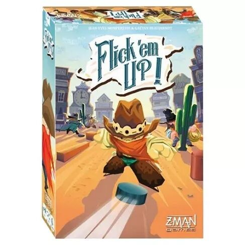
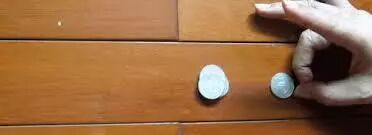
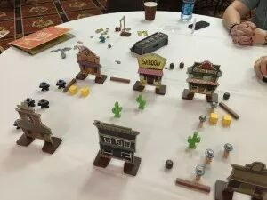
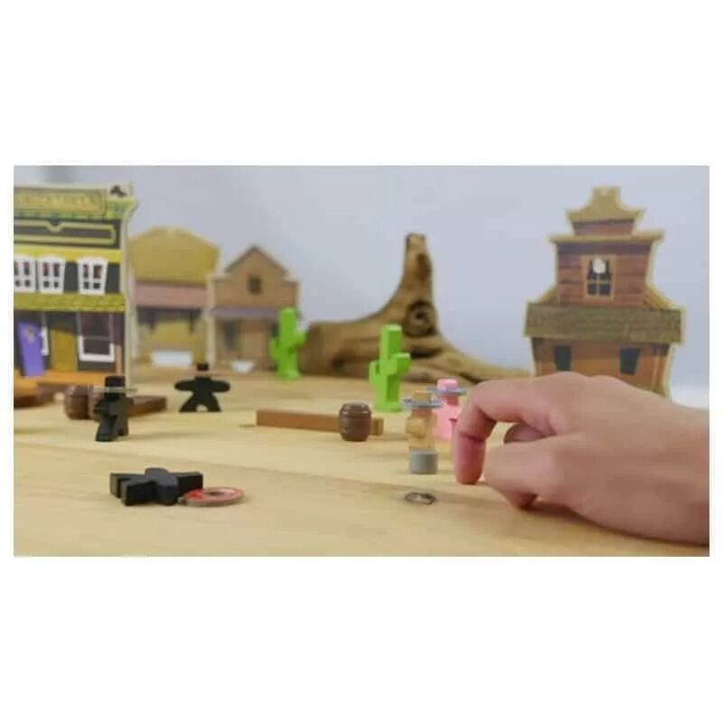
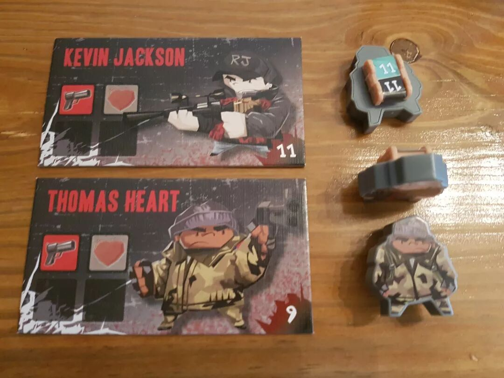

说起玩桌游，大家首先能想到的就是狼人杀，阿瓦隆，三国杀等等的知名桌游。可惜这样的游戏由于太过于知名，被大家研究得太多，以至于新手与老手很难玩到一起去。
那么到底有没有不管新手老手，大家都能尽情地参与其中的游戏呢？
这样的游戏其实市面上也不少，比如《UNO》，《只言片语》，《砸蛋》，《exploding kittens》等等。不过这些桌游可能也并不是特别小众，大家可能已经都玩腻了。
最近我又发现了一款这样的优秀游戏，在此隆重推荐给大家。
《荒野大弹客》!!!
不知道你在中学里有没有玩过弹硬币的游戏？至少我在上中学的时候，这个游戏超级流行的。
游戏的方式很简单，每个玩家各自在课桌上放一个硬币，然后只要自己的硬币把对方的硬币弹下去了，自己的硬币还保持在桌面上，就算赢了。

荒野大弹客就是类似这样的游戏。游戏开始前，我们会把所有的玩家分成人数相等的两对，各自用一个带着帽子的塑料小镖客代表。
然后我们会按照当前游玩的剧情，把小镇里的建筑，镇上的木桶以及仙人掌都按照剧本摆好，然后让各个小人各就其位。

每个小人每回合都可以做两次行动，这两次行动都可以从移动与射击之中选择一个执行。
要是想移动的话，我们就用一个白色的小圆块代替小人的位置，然后用手指弹小人。要是小人没有碰到任何别的东西，它就算移动成功，我们就可以用小人重新替代回这个白色小圆块的位置。
要是想射击的话，我们就在小人的左手边或者右手边放下一个黑色的小小圆块。我们直接弹这个黑色的小小圆块，要是它可以击倒对面的小人，就算是打中了对方，对方就掉血。

每个小人一开始都有三点血。要是小人掉完了三点血就算死了。要是一边的小人都死完了，那另一边就胜利了。

至于行动的顺序，并不需要每一次都按照顺序行动，而是可以根据具体情况来调节。
游戏中最有意思的就是弹的环节。就算你再新手，策略再不好，只要运气足够好，弹得准，总有赢的希望。
嘛，这个游戏就是这样。别看基础的规则蛮简单的，真的玩起来可以玩出一身汗呢，紧张的。
游戏的英文版叫Flick'em Up, 在Amazon上面一搜就有了。
顺便推荐一下帮助我找到这款桌游的优秀网站，弈乎的桌游选择器http://www.yihubg.com/find。
在这个网站上不仅有一个超大的桌游库，还有针对每个不同桌游的难易度，类型，人数等等有用的数据。这么多的桌游，总有一款适合你！